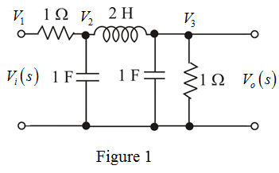

Substitute for  in equation (1).
in equation (1).
Simplify further.
Thus, the transfer function of the RLC network is, .
Refer to Figure P16.11 in the textbook for the RLC network.
Redraw the circuit by representing nodal voltages as shown in Figure 1.

From the circuit, write the following voltage equations:
The nodal equations at node (2) is,
Rearrange the terms.
…… (1)
The nodal equation at node (3) is,
Rearrange the terms.
Substitute for in equation (1).
Simplify further.
Thus, the transfer function of the RLC network is, .
There are no zeros as the numerator is a constant.
The poles are the roots of the equation,
The roots of the equation are,
Thus, the poles of the transfer function are, .